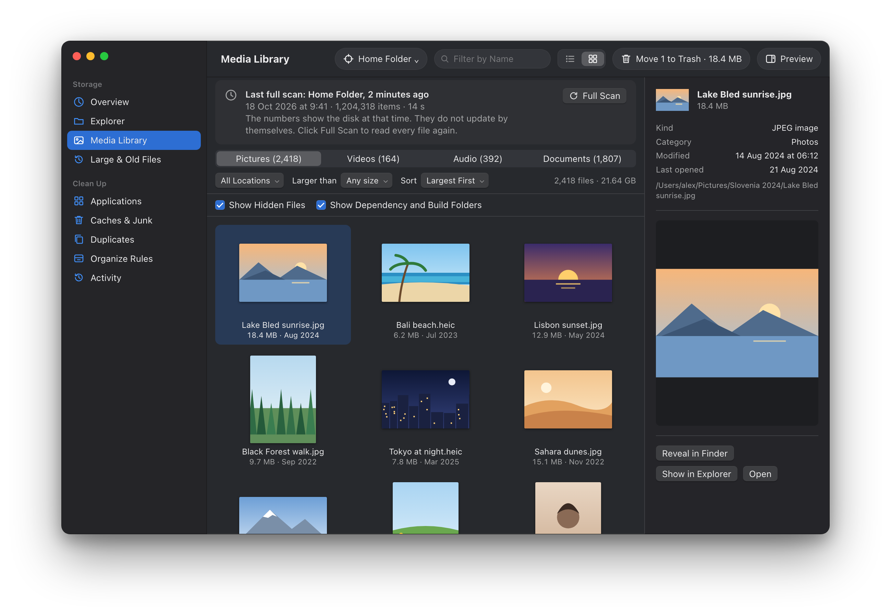
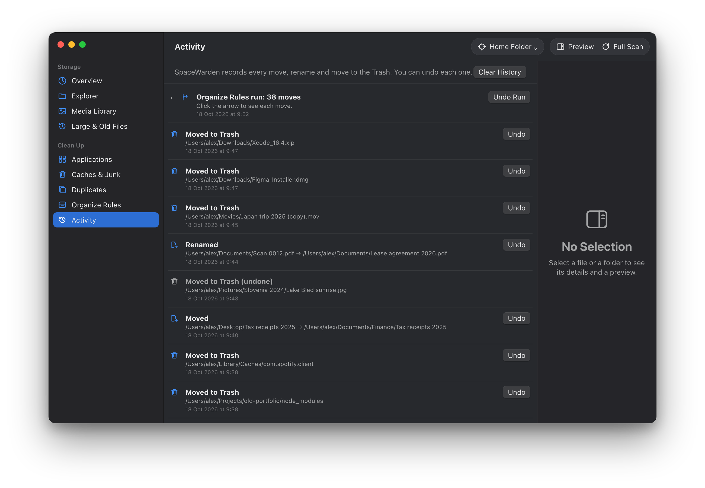

SpaceWarden
Tidy Mac. Zero snooping.
Free up space in a few clicks. Everything goes to the Trash first, and your files never leave your Mac.
Free. macOS 15 Sequoia or later.
To hear about the first release, watch the repository on GitHub (Watch → Custom → Releases).

The sizes and file names in the screenshots are examples.
Easy
See what fills your Mac in seconds. Clear it in a few clicks.
Safe
Everything goes to the Trash first. Activity can undo it.
Private
No account, no tracking. Passwords, keys and messages are never scanned.
Everything you need to free up space
One app finds the clutter, explains it, and clears it safely.
-
See what fills your Mac
A storage map, simple categories and the biggest folders, in seconds.
-
Clear it in a few clicks
Recommended actions show how much space each one frees and how safe it is.
-
Big old files
Find large files that you have not opened in months.
-
Caches and junk
Clear browser and developer caches. Each one shows how it comes back.
-
Duplicates
Find exact copies. One copy always stays.
-
Apps you forgot
See the apps you seldom use. Remove them with their leftover files.
-
All your media in one place
Photos, videos, music and documents on one screen.
-
Tidy rules
Move, rename and sort files. Undo each step in Activity.
-
Quick previews
Look inside files and videos without opening other apps.
See where your space went
The storage map shows what fills your Mac. The Media Library shows your photos with a preview. Duplicates finds exact copies, and Activity can undo each change.





Zero snooping, by design
A storage app sees your whole disk. So SpaceWarden keeps everything on your Mac.
Private
- SpaceWarden works offline. It goes online only when you select Check for Updates, and it sends nothing about you or your files.
- No account, no tracking, no analytics.
- Passwords, keys and private messages are never scanned or read.
- File names, sizes and contents stay on your Mac. Previews and the duplicate search read files on your Mac only.
Safe
- Everything goes to the Trash first. You can put it back.
- Activity lists each move, rename and trash, and can undo it.
- Each cleanup shows how safe it is and how the data comes back.
- SpaceWarden never downloads or installs an update by itself.
This site has no analytics or trackers. GitHub hosts it.
Install in a minute
SpaceWarden is a normal Mac app. There is no installer and no account.
- Download SpaceWarden.dmg When it is out, get the latest version from GitHub Releases.
- Drag it to Applications Open the disk image, then drag SpaceWarden to the Applications folder.
- Open SpaceWarden Open it from Applications and click Full Scan. No setup is needed.
Optional: count every folder
SpaceWarden works without Full Disk Access. The scan then skips a few folders, such as iCloud Drive and the data of other apps, so that macOS does not ask you about each one.
To count these folders too, turn on Full Disk Access at any time. In SpaceWarden, open Settings → Privacy, or click Include Them… after a scan.
Passwords, keys and private messages stay off limits, with or without it.
Questions
Is SpaceWarden really free?
Yes. SpaceWarden is free, with every feature. There is no trial and no ads. If you like it, you can support the developer.
Does SpaceWarden connect to the internet?
Only when you select Check for Updates. Then it reads one small file from GitHub and sends no information about you or your files. It never accepts connections.
Does it read my files?
To measure space, SpaceWarden reads names, sizes and dates. It reads the contents of a file only on your Mac, when you preview it or search for duplicates. It never scans or reads passwords, keys or private messages.
Can I undo a cleanup?
Yes, for the default actions. They move items to the Trash, and Activity can put them back. Delete Immediately and Empty Trash cannot be undone, and SpaceWarden asks before it does them.
How do updates work?
Select SpaceWarden → Check for Updates…. If a new version is available, download it from GitHub, quit SpaceWarden, and drag the new version to Applications. Your settings stay.
Do I need to give it Full Disk Access?
No. Every feature works without it. Without it, the scan skips iCloud Drive, cloud storage folders, the data of other apps and the Trash. If you want the scan to count them too, turn it on in Settings → Privacy. You can turn it off again in System Settings.
Which Macs does it run on?
Macs with macOS 15 Sequoia or later.
Support the developer
SpaceWarden is free. If it freed space for you, you can support its work. Each tip helps to pay for the Apple developer account and new features.
A tip gives no extra features. Every feature is free for everyone.